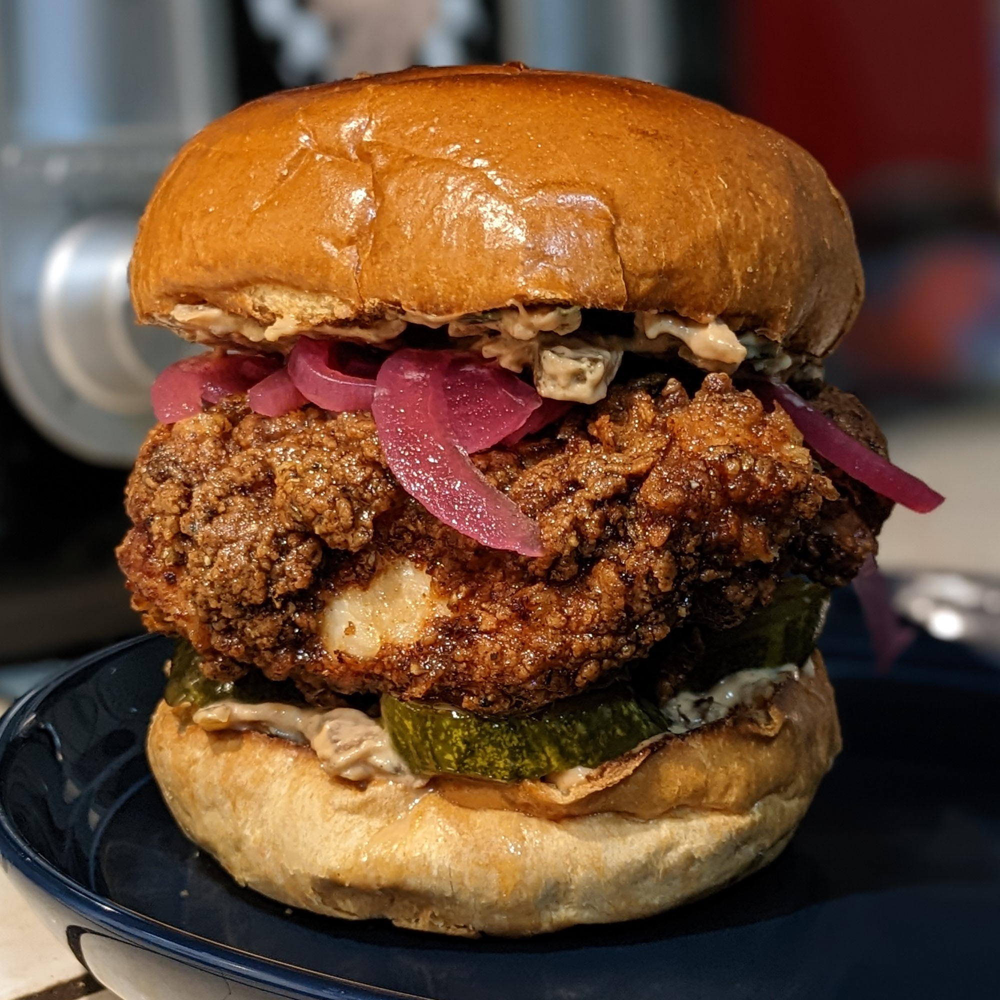

Fried Chicken Sandwich

Ingredients
-
Sauce
- Mustard - 1 part
- Ketchup - 2 parts
- Mayo - 2 parts
- Paprika
- Onion Powder
-
Dredge
- Flour - 50 grams
- Cornstarch - 25 grams
- Black Pepper - 20 cranks
- Salt
- Red Chilli Powder
- Smoked Paprika
- Garlic Powder
- Oregano
- Chicken
- 2 Chicken Thighs
- Milk
- Vinegar
- Salt - A pinch
-
Other essential components
- Brioche buns
- Lettuce
- Pickled Onions
- Tomatoes
- Sweet Pickles
Steps
- Place chicken in a bowl and add milk, vinegar and a pinch of salt
- Mix all ingredients for the dregde
- Fire up stove and start heating up a saucepan filled with vegetable oil
- Drop some chicken mixture into the dredge to form small clumps
- Add chicken to dredge and coat generously before deep frying for 10-12 minutes
- Prep other essential components and sauce while the chicken fries.
- Prepare the burger when chicken is completely cooked
- Enjoy!